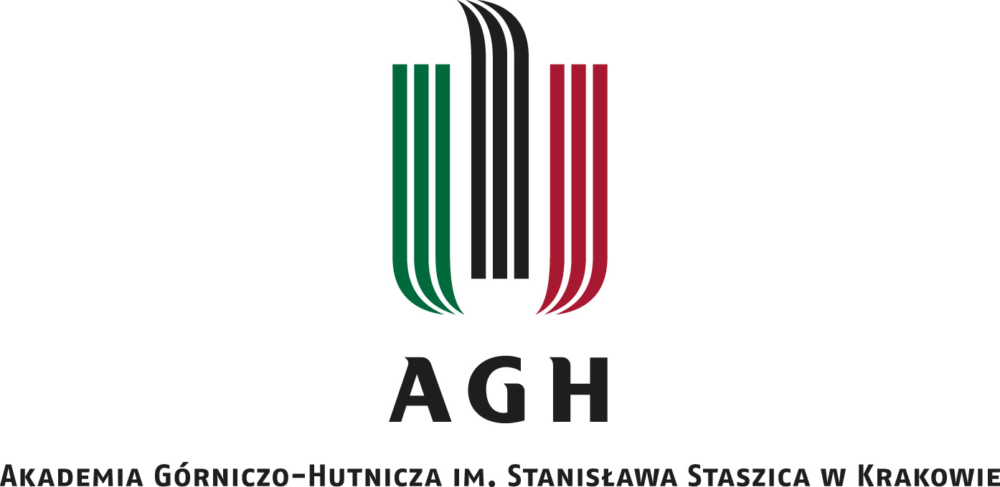

|  | |
| Obrazek bez opisu alternatywnego | Obrazek z opisem alternatywnym |
Akademia Górniczo-Hutnicza im. Stanisława Staszica w Krakowie (AGH) (ang. AGH University of Krakow) – polski publiczny uniwersytet techniczny w Krakowie.
Uczelnia została powołana w 1913 r.[4], a jej otwarcie nastąpiło w 1919 r.[5]
AGH jest uniwersytetem ukierunkowanym na tworzenie innowacyjnych technologii. W uczelni prowadzone są badania w obszarach nauk technicznych, nauk ścisłych, nauk o Ziemi i nauk społecznych.
Jest to jedna z 10 polskich szkół wyższych o statusie uczelni badawczej[6].
W skład uczelni wchodzi m.in. 17 wydziałów, centrum badawcze – Akademickie Centrum Materiałów i Nanotechnologii oraz centra dydaktyczne[7].
AGH oferuje studia na trzech poziomach: I i II stopień oraz kształcenie w szkołach doktorskich. Uczelnia kształci ponad 20 000 studentów i zatrudnia ponad 2100 nauczycieli akademickich (w tym ponad 200 profesorów i ponad 500 profesorów uczelni)[8].
W zestawieniach zagranicznych AGH zajmuje 1. miejsce wśród polskich uczelni technicznych, m.in. w The Center for World University Rankings 2022-2023[9] oraz 1. miejsce wśród polskich uczelni technicznych w tzw. rankingu szanghajskim – Academic Ranking of World Universities 2021[10].